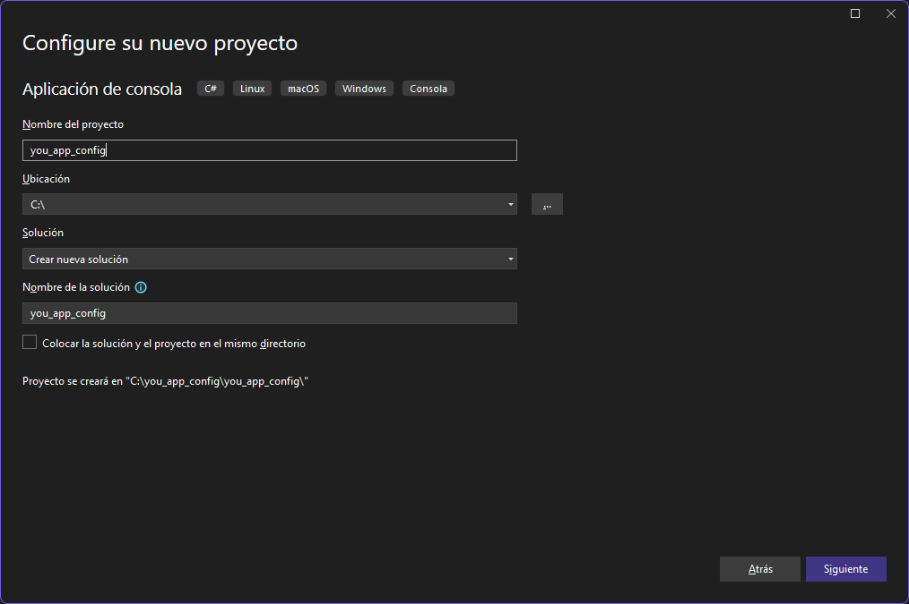
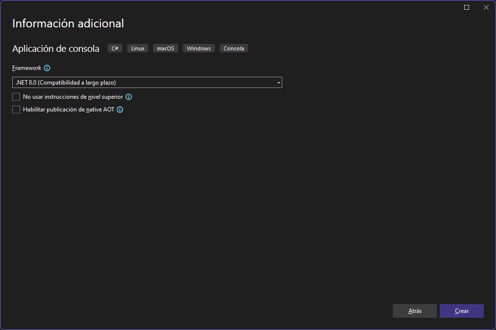
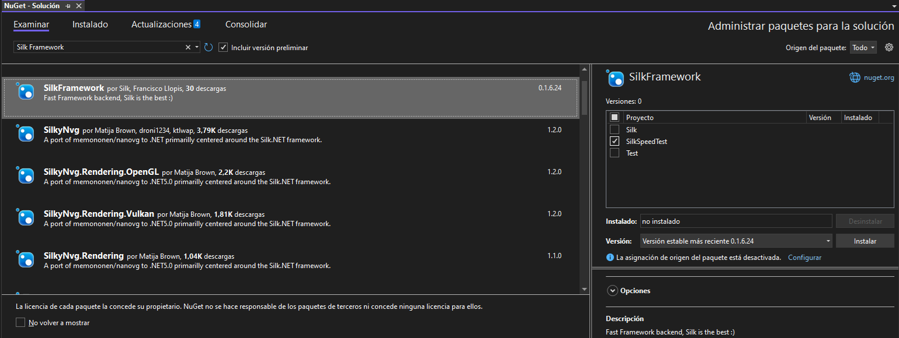

You can get started with the Silk Framework by following the steps below:
First, you need create a new project of .NET8
* Important: You need to have the Visual Studio 2022 installed on your computer. .NET8 is only available for this Visual Studio version.
Create a new project whose type is a compatible with .NET8, You can use the Console App (.NET) template or ASP.Net core template.
Configure your name and path of the project.
Select the NET8 version.
The first method is to install the Silk Framework using the NuGet package manager into Visual Studio 2022.
Open the NuGet package manager and search for the Silk Framework, and install it in your pick project.
In the second method, you can install the Silk Framework using the dotnet CLI.
Change the version of the Silk Framework to the latest version, or the version you want to install.
The first way to build with Silk is to create a new class to initalize the server. Adapt the code to your needs, In a Console App template, or WinForms, Etc... The recomendation of Silk Team is to use the Console App template.
Now create a GenericServer with default configuration for the test. Just for testing in localhost and port 80.
If you are using Visual Studio 2022, you can run the app with the F5 key.
You can test the app with the following command if has using dotnet CLI
Now navigate to http://localhost:80/silk/monitor in your browser. if you see the Silk Monitor, the server is running.